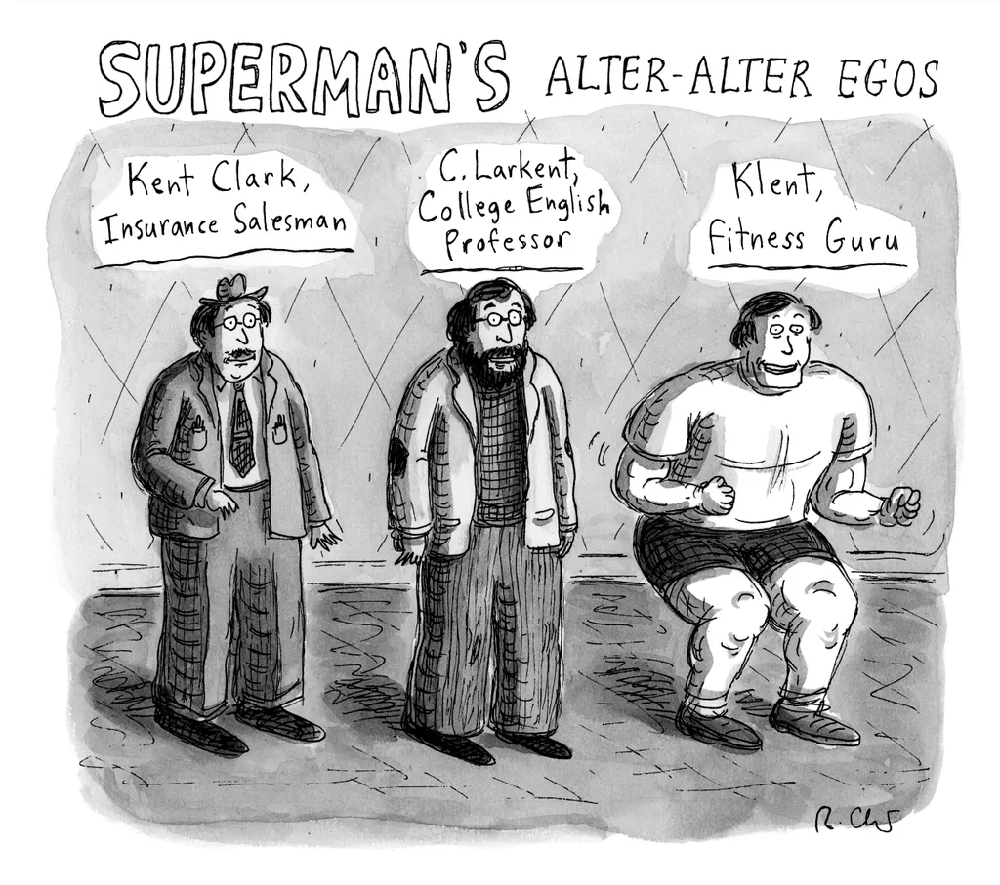
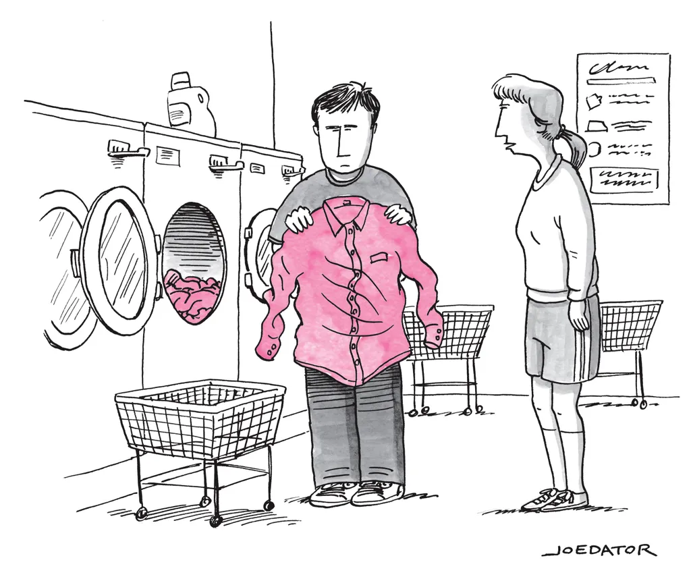

Cows are easy to love. Their eyes are a liquid brown, their noses inquisitive, their udders homely; small children thrill to their moo.
Most people like them even better dead. Americans eat three hamburgers a week, so serving beef at your cookout is as patriotic as buying a gun. When progressive Democrats proposed a Green New Deal, earlier this year, leading Republicans labelled it a plot to “take away your hamburgers.” The former Trump adviser Sebastian Gorka characterized this plunder as “ what Stalin dreamt about,” and Trump himself accused the Green New Deal of proposing to “permanently eliminate” cows. In fact, of course, its authors were merely advocating a sensible reduction in meat eating. Who would want to take away your hamburgers and eliminate cows?
Well, Pat Brown does, and pronto. A sixty–five–year–old emeritus professor of biochemistry at Stanford University, Brown is the founder and C.E.O. of Impossible Foods. By developing plant-based beef, chicken, pork, lamb, dairy, and fish, he intends to wipe out all animal agriculture and deep–sea fishing by 2035. His first product, the Impossible Burger, made chiefly of soy and potato proteins and coconut and sunflower oils, is now in seventeen thousand restaurants. When we met, he arrived not in Silicon Valley’s obligatory silver Tesla but in an orange Chevy Bolt that resembled a crouching troll. He emerged wearing a T–shirt depicting a cow with a red slash through it,and immediately declared, “The use of animals in food production is by far the most destructive technology on earth. We see our mission as the last chance to save the planet from environmental catastrophe.”
Meat is essentially a huge check written against the depleted funds of our environment. Agriculture consumes more freshwater than any other human activity, and nearly a third of that water is devoted to raising livestock. One–third of the world’s arable land is used to grow feed for livestock, which are responsible for 14.5 per cent of global greenhouse–gas emissions. Razing forests to graze cattle— an area larger than South America has been cleared in the past quarter century— turns a carbon sink into a carbon spigot.
Brown began paying attention to this planetary overdraft during the late two–thousands, even as his lab was publishing on topics ranging from ovarian–cancer detection to how babies acquire their gut microbiome. In 2008, he had lunch with Michael Eisen, a geneticist and a computational scientist. Over rice bowls , Brown asked, “What’s the biggest problem we could work on?”
“Climate Change,” Eisen said. Duh.
“And what’s the biggest thing we could do to affect it?” Brown said, a glint in his eye. Eisen threw out a few trendy notions: biofuels, a carbon tax. “Unh–unh,” Brown said. “It’s cows!”
When the world’s one and a half billion beef and dairy cows ruminate, the microbes in their bathtub–size stomachs generate methane as a by–product. Because methane is a powerful greenhouse gas, some twenty–five times more heat–trapping than carbon dioxide, cattle are responsible for two–thirds of the livestock sector’s G.H.G. emissions. (In the popular imagination, the culprit is cow farts, but it’s mostly cow burps.) Steven Chu, a former Secretary of Energy who often gives talks on climate change, tells audiences that if cows were a country their emissions “would be greater than all of the " E.U., and behind only China and America.” Every four pounds of beef you eat contributes to as much global warming as flying from New York to London— and the average American eats that much each month.
“So how do we do it?” Eisen asked.
“Legal economic sabotage!” Brown said. He understood that the facts didn’t compel people as strongly as their craving for meat, and that shame was counterproductive. So he’d use the power of the free market to disseminate a better, cheaper replacement. And, because sixty per cent of America's beef gets ground up, he’d start with burgers.
A lean marathon runner with the air of a wading stork, Brown was an unlikely food entrepreneur. His older brother, Jim, said, “The idea of Pat running a company was a real surprise. The mission had always been gene mapping and finding cures for aids and cancer.” Brown, a vegan who ate his last burger in 1976, had never spared a thought to food, considering it “just stuff to shove in your mouth.” Free–rangingly curious, he lacked a C.E.O.’s veal–penned focus. “Pat gave some of the best science talks I’ve ever seen,” Eisen told me, “and also some of the worst, because the slides wouldn’t match after he started talking about something different from what he had planned.”
Cartoon by Roz Chast
The existing plant–based armory was unpromising; veggie burgers went down like a dull sermon. But, Brown reasoned, this was because they were designed for the wrong audience— vegetarians, the five per cent of the population who had accustomed themselves to the pallid satisfactions of bean sprouts and quinoa. “The other veggie–burger companies were just trying to be as good as the next plant–based replacement for meat, which meant they were making something no meat lover would ever put in his mouth,” Brown said. To get meat–eaters to love meat made from plants, he had to resolve a scientific question, one that he decided was the most important in the world: What makes meat so delicious?
Brown assembled a team of scientists, who approached simulating a hamburger as if it were the Apollo program. They made their burger sustainable: the Impossible Burger requires eighty–seven per cent less water and ninety–six per cent less land than a cowburger, and its production generates eighty–nine per cent less G.H.G. emissions. They made it nutritionally equal to or superior to beef. And they made it look, smell, and taste very different from the customary veggie replacement. Impossible’s breakthrough involves a molecule called heme, which the company produces in tanks of genetically modified yeast. Heme helps an Impossible Burger remain pink in the middle as it cooks, and it replicates how heme in cow muscle catalyzes the conversion of simple nutrients into the molecules that give beef its yeasty, bloody, savory flavor. To my palate, at least, the Impossible Burger still lacks a beef burger’s amplitude, that crisp initial crunch followed by shreds of beef falling apart on your tongue. But, in taste tests, half the respondents can’t distinguish Impossible's patty from a Safeway burger.
Eighteen months ago, White Castle, the nation’s oldest burger chain, started selling the Impossible slider, and sales exceeded expectations by more than thirty per cent. Lisa Ingram, White Castle’s C.E.O., said, “We’ve often had customers return to the counter to say, ‘You gave us the wrong order, the real burger.’ ” In August, Burger King rolled out the Impossible Whopper in all of its seventy–two hundred locations. Fernando Machado, the company’s chief marketing officer, said, “ Burger King skews male and older, but Impossible brings in young people and women, and puts us in a different spectrum of quality, freshness, and health.”
Ninety–five per cent of those who buy the Impossible Burger are meat–eaters. The radio host Glenn Beck, who breeds cattle when he’s not leading the “ They’re taking away your hamburgers!” caucus, recently tried the Impossible Burger on his show, in a blind taste test against a beef burger— and guessed wrong. “That is insane!” he marvelled. “ I could go vegan!”
Pat Brown had built a better mouthtrap. But would that be enough?
The working title of Impossible Foods’ 2019 impact report was “Fuck the Meat Industry.” “I never seriously considered using it,” Brown told me, “but it helps frame the mojo.” Brown has a light voice, a tolerant smile, and an engaging habit of absorption; he often remarks that some scientific conundrum is “too arcane to get into,” then plunges into it regardless, surfacing minutes later with a sheepish “Anyway, anyway!” as he tries to recall the topic at hand. But the mojo is conquest. “We plan to take a double–digit portion of the beef market within five years, and then we can push that industry, which is fragile and has low margins, into a death spiral,” he said. “Then we can just point to the pork industry and the chicken industry and say ‘You’re next!’ and they’ll go bankrupt even faster.”
Meat producers don’t seem too worried that Brown will rid the earth of livestock by 2035. The three largest meatpacking companies in America have combined annual revenues of more than two hundred billion dollars. Mark Dopp, a senior executive at the North American Meat Institute, a lobbying group, told me, “I just don’t think it’s possible to wipe out animal agriculture in sixteen years. The tentacles that flow from the meat industry— the leather and the pharmaceuticals made from its by–products, the millions of jobs in America, the infrastructure— I don’t see that being displaced over even fifty years.”
A number of alternative–protein entrepreneurs share Brown’s mission but believe he’s going about it the wrong way. The plant based producer Beyond Meat is in fifty–three thousand outlets, including Carl’s Jr., A&W, and Dunkin’, and has a foothold in some fifty countries. Its I.P.O., in May, was the most successful offering of the year, with the stock up more than five hundred per cent; though the company is losing money, investors have noticed that sales of plant–based meat in restaurants nearly quadrupled last year. While Impossible depends on the patented ingredient heme, rastructure— I don’t see that being displaced over even fifty years.”
A number of alternative–protein entrepreneurs share Brown’s mission but believe he’s going about it the wrong way. The plant based producer Beyond builds its burgers and sausages without genetically modified components, touting that approach as healthier. Ethan Brown, Beyond’s founder and C.E.O. (and no relation to Pat Brown), told me, jocularly, “I have an agreement with my staff that if I have a heart attack they have to make it look like an accident.”
Several dozen other startups have taken an entirely different approach: growing meat from animal cells. Yet even Pat Brown’s competitors often end up following his lead. Mike Selden, the co–founder and C.E.O. of Finless Foods, a startup working on cell based bluefin tuna, said, “Pat and Impossible made it seem like there’s a real industry here. He stopped using the words ‘vegan’ and ‘vegetarian’ and set the rules for the industry: ‘If our product can’t compete on regular metrics like taste, price, convenience, and nutrition, then all we’re doing is virtue signalling for rich people.’ And he incorporated biotechnology in a way that’s interesting to meat–eaters— Pat made alternative meat sexy.”
What’s striking about Brown is his aggression. He is a David eager to head–butt Goliath. “If you could do two things of equal value for the world, and in one of them someone is trying to stop you, I would do that one,” he told me. Brown doesn’t care that plant–based meat amounts to less than 0.1 per cent of the $1.7–trillion global market for meat, fish, and dairy, or that meat contributes to the livelihoods of some 1.3 billion people. His motto, enshrined on the wall of Impossible’s office, is “Blast ahead!”
During the six months that I was reporting this story, the company’s head count grew sixty per cent, to five hundred and fifty–two, and its total funding nearly doubled, to more than seven hundred and fifty million dollars. Brownlaid out the math: to meet his 2035 goal, Impossible just has to double its production every year, on average, for the next 14.87 years. This means that it has to scale up more than thirty thousandfold. When I observed that no company has ever grown anywhere near that fast for that long, he shrugged and said, “We will be the most impactful company in the history of the world.”
America’s first commercial mock meat came out of the Battle Creek Sanitarium, in Michigan, at the turn of the twentieth century. The sanitarium was run by Dr. John Harvey Kellogg, a member of the vegetarian Seventh–day Adventist Church, who proselytized for sexual abstinence and made his eponymous cornflakes superbly bland, hoping that their ingestion would dampen lust. When Kellogg began to sell cans of Protose, an insipid mixture of nuts and gluten, he claimed that it “resembles potted veal or chicken”— meat in general, rather than any specific one.
In the seventies and eighties, soy burgers developed by MorningStar Farms and Gardenburger epitomized a peaceful life style, indicating that “no animals were harmed in the making of this patty.” In 2001, Bruce Friedrich, who ran vegan campaigns at People for the Ethical Treatment of Animals, led a “Murder King” protest, trying to get Burger King to change its ways. The chain tweaked its animal–welfare policies, but kept on selling beef. Friedrich, who is now the executive director of the Good Food Institute, which advocates for meat replacements, told me, “If you’re asking fast-food restaurants to pay more to compete, and to use a veggie burger that isn’t very good, that’s a colossal fail.”
In the past decade, venture capitalists have begun funding companies that view animal meat not as inflammatory, or as emblematic of the Man, but as a problematic technology. For one thing, it’s dangerous. Eating meat increases your risk of cardiovascular disease and colorectal cancer; a recent Finnish study found that, across a twenty–two–year span, devoted meat–eaters were twenty three per cent more likely to die. Because antibiotics are routinely mixed into pig and cattle and poultry feed to protect and fatten the animals, animal ag promotes antibiotic resistance which is projected to cause ten million deaths a year by 2050. And avian and swine flus, the most likely vectors of the next pandemic, pass easily to humans, including via the aerosolized feces widely present in slaughterhouses. Researchers at the University of Minnesota found fecal matter in sixty–nine per cent of pork and ninety–two per cent of poultry; Consumer Reports found it in a hundred per cent of ground beef.
For another thing, meat is wildly inefficient. Because cattle use their feed not only to grow muscle but also to grow bones and a tail and to trot around and to think their mysterious thoughts, their energy–conversion efficiency— the number of calories their meat contains compared with the number they take in to make it— is a woeful one per cent.
It’s easy enough to replicate some animal products (egg whites are basically just nine proteins and water), but mimicking cooked ground beef is a real undertaking. Broadly speaking, a burger is sixty per cent water, twenty–five per cent protein, and fifteen per cent fat, but, broadly speaking, if you assembled forty–two litres of water you’d be sixty per cent of the way to a human being. Cooked beef contains at least four thousand different molecules, of which about a hundred contribute to its aroma and flavor and two dozen contribute to its appearance and texture. When you heat plant parts, they get softer, or they wilt. When you heat a burger, its amino acids react with simple sugars and unsaturated fats to form flavor compounds. The proteins also change shape to form protein gels and insoluble protein aggregates— chewy bits— as the patty browns and its juices caramelize. This transformation gives cooked meat its nuanced complexity: its yummy umami.
Mimicking these qualities was the task Pat Brown undertook in 2011, when he decided, after organizing a workshop on animal agriculture that accomplished nothing, that he’d have to solve the problem himself. He worked up a pitch, then bicycled down the road from Stanford to three venture–capital firms. His pitch had everything V.C.s like to fund: a huge market, a novel way to attack it, and a passionate founder who already talked the talk. Brown’s habit of referring to “the technology that provides us with meat” made plant burgers sound like an iterative efficiency rather than like a threat to a beloved way of life. All he was doing was disintermediating the cow.
Impossible ended up taking three million dollars in seed funding from Khosla Ventures. Then Brown started hiring scientists, most of whom had no food expertise. His wife, Sue Klapholz, who trained as a psychiatrist and worked as a geneticist, became the company’s nutritionist. “I had been making jewelry and doing nature photography, having this great retirement,” she told me, still surprised by this turn in their lives. No one quite knew what they were doing, including Brown, who’d announce projects such as “We need every single plant-based ingredient in the world. Go!”
For alternative–protein companies, the first challenge is often producing a protein that’s utterly tasteless. A flavor packet can then make it delicious. A startup called Spira, for instance, is attempting to develop algae called spirulina as a food source. “The problem is that it’s a slimy goop,” Surjan Singh, the company’s C.T.O., told me. “And when you dry it and powderize it, it tends to biodegrade, so it tastes terrible. We’re hoping to break even, eventually, where we can extract a protein isolate that’s really good for you, but that tastes like as close to nothing as possible.”
Impossible’s first prototype burgers contained the “off–flavors” characteristic of their foundational protein, soy or wheat or pea. (Pea protein is sometimes said to evoke cat urine.) So the company’s scientists had to learn how to erase those flavors, even as they were learning the subtleties of the aroma and taste they were trying to emulate.
One morning in Impossible’s lab, Brown showed me a gas chromatograph–mass spectrometer, which is used to identify the molecules that appear in meat as it’s cooked and to link those molecules to odors. “Some poor schmuck has their nose stuck in here for forty–five minutes,” Brown said, indicating a plastic nose mold that protruded from the machine. “You have to bunny–sniff at a very high rate, often trying to characterize molecules you’ve never smelled before.” He looked at a handwritten list from the last assay: “You might say, ‘We’ve got to get rid of “Band–Aid,” or “skunk,” or “diaper pail” ’— but don’t judge, because all of those together make up ‘burger taste.’ ”
Most veggie burgers are formed by an extruder, a machine that operates like a big pressure cooker, using heat and compression to replicate meat’s fibrous morphology. Brown suspected that the key to a truly meaty plant burger was an ingredient. He had a hunch about heme, an iron–carrying molecule in hemoglobin (which makes your blood red), whose structure is similar to that of chlorophyll (which enables plants to photosynthesize). David Botstein, a geneticist who sat on Impossible’s board, told me, “If you understand biochemistry, you understand that heme, more than anything else, is a central molecule of animal and plant life.” As Brown was beginning to experiment, he pulled up clover from behind his house and dissected its root nodules, to see if there was enough heme inside to make them pink. (There was.)
“Which would be more dangerous— a bear, or a man in a bear suit?”
Cartoon by Victoria Roberts
In Impossible’s microbiology lab, Brown told me, “An interesting, extremely speculative idea is that there’s an evolutionary advantage to human beings in seeking out heme. It’s a cue that means ‘There’s a dense source of protein and iron nearby.’ ” The first time that Impossible made a burger with heme, he said, “it tasted like meat, and within six months we had compelling evidence that it was the magic ingredient that gives meat its flavor.”
In 2012, the company tested heme from thirty–one sources, ranging from tobacco plants to geothermal–spring water. Myoglobin from cows, the obvious candidate, oxidized too quickly (which is why ground beef goes brown in your fridge). Soy leghemoglobin performed best, so Impossible built a dozen machines to try to harvest it from the root nodules of soy. “We even rented a street sweeper and fed the soy plants in there,” Brown told me. Nothing worked. “We flushed a year or more and half of our seed funding on this project I’m to blame for— the total low point,” he said. They ended up manufacturing heme by genetically modifying yeast with a snippet of soy DNA. Yeast is usually white; Impossible’s yeast, made in fifty–thousand–gallon tanks, is the foamy red of cocktail sauce.
Impossible’s first burger, built around wheat protein, launched in 2016, at four high–end restaurants: Cockscomb and Jardinière, in San Francisco; Crossroads Kitchen, in Los Angeles; and Momofuku Nishi, in New York . An improved formulation, introduced last January, swapped out wheat for soy and was not only gluten–free but also lower in fat and cheaper to manufacture. Traci Des Jardins, the chef behind Jardinière, said, “The 1.0 version had a mushy mouthfeel, and it would adhere to surfaces and sear in a way that meat doesn’t. This version has a more toothsome bounce, and it doesn’t fall apart in a Bolognese sauce. The 2.0 really does behave just like beef.”
Even those sympathetic to Brown’s mission fret that taste and mouthfeel won’t matter if the desire for meat is hardwired by evolution. Maple Leaf Foods, a Canadian company, is building a three–hundred–million–dollar facility in Indiana to make alternative proteins. But its C.E.O., Michael McCain, told me, “The human body has been consuming animal protein for a hundred and fifty thousand years, and I honestly think that’s going to continue for a really long time.”
Climate change, which now drives our hunt for meat substitutes, originally drove hominids to turn to meat, about two and a half million years ago, by making our usual herbivorean foodstuffs scarce. Eating animals added so much nutrition to our diets that we no longer had to spend all our time foraging, and we developed smaller stomachs and larger brains. Some scientists believe that this transformation created a powerful instinctive craving. Hanna Tuomisto, a Finnish professor of agricultural science, recently wrote, “This evolutionary predilection explains why eating meat provides more satisfaction compared to plant–based food and why so many people find it difficult to adopt a vegetarian diet.”
An inborn meat hunger remains a hypothesis; meat is the object of many human urges, including the urge to construct all encompassing theories. In the book “Meathooked,” Marta Zaraska writes, “We crave meat because it stands for wealth and for power over other humans and nature. We relish meat because history has taught us to think of vegetarians as weaklings, weirdos, and prudes.” The anthropologist Nick Fiddes goes further, declaring, in “Meat: A Natural Symbol,” that we value meat not in spite of the fact that it requires killing animals but because it does. It’s the killing that establishes us as kings of the jungle.
Ethan Brown, of Beyond Meat, suspects that nibbling plant patties doesn’t exude the same macho vibe. A bearded, gregarious, six foot–five man who played basketball at Connecticut College, he has retained a squad of athlete “ambassadors” to help dispel that perception. When I visited Ethan at the company’s offices, in El Segundo, California, he pointed me to a 2009 study of Ivory Coast chimpanzees which suggested that males who shared meat with females doubled their mating success. “Men usually give women the meat first, at dinner, before the sex— you want to be a protein provider,” he said. “Do you think if you take a woman out and buy her a salad you get the same reaction?”
It’s worth noting that the Neanderthals, who subsisted almost entirely on meat, were outcompeted by our omnivorous ancestors. In any case, Ethan told me, meat no longer serves its original purpose, and “we can use the expanded brain that meat gave us to get us off of it.” Like many alternative–protein entrepreneurs, he is a vegan; when he taste–tests Beyond’s burgers, he occasionally chews a beef burger to orient his palate, then spits it out and wipes his tongue with a napkin. He has a potbellied pig named Wilbur at home that knows how to open the refrigerator: “Wilbur lives in our house to teach my kids that, from the perspective of science, the moral circle is poorly defined.”
Ethan said that he launched Beyond Meat to mitigate meat’s effects on “human health, climate change, natural resources, and animal welfare— we call them ‘the four horsemen.’ ” One consequence of this compendious mission, with its attention to people’s health— and to their concerns about health, warranted or not— is that Beyond, unlike Impossible, uses only ingredients taken more or less directly from nature.
For lunch, Ethan and I ate the latest Beyond Burger. Built around proteins derived from peas, mung beans, and brown rice, it was enriched with coconut oil and cocoa butter. Ethan, a self–described tough grader, rated it a 7.5 out of 10. “We’ve had great progress in texture and juiciness,” he said, but added that the company’s scientists were still working on “color transition.” My burger was brown on the outside and purple in the middle, with a bloody affect encouraged by beet juice— but the fading between the two tones seemed faintly amiss. While savory, and possessed of a plausible mouthfeel, the patty was also curiously dense.
Pea protein’s off–flavor was another problem to solve. Ethan said that he planned to expand his supply chain to include proteins from such plants as flax and lupine. He added, reflexively, “The best thing about pea is that it’s not soy”— Impossible’s chief ingredient. “I learned early on that consumers don’t want a lot of soy, because they’re worried about phytoestrogen, the concern being that it disrupts hormones and gives you ‘man boobs.’ ” I observed that there was no evidence that this ever happens unless you consume soy in gigantic amounts. “I don’t believe in the man–boobs theory,” he said, “but who am I to question our customers?”
Ethan’s scientists are skeptical of heme’s efficacy. Dariush Ajami, who runs Beyond ’s lab, told me that he viewed it as a mere colorant, because, in collaborating with companies specializing in food chemistry, “we’ve never seen any flavor houses using heme as a flavor catalyzer.” Ethan told me that even if heme proved to be a catalytic dynamo he wouldn’t use it, or any genetically modified ingredient: “There’s an evolutionary instinct, deep within us, to avoid things we don’t understand.” When I noted that consumers already accept many G.M.O. products— more than half the rennet used to make cheese is genetically modified, and ninety–two per cent of America’s corn is G.M.O.— he conceded, “People will get used to it in the Impossible Burger.” He grinned. “ But will they get used to it before the burn rate gobbles the company?”
Meat producers like to point out that meat has a “clean deck”: its components are few. One ag–business executive told me that consumers would, or anyway should, be alarmed by the long list of ingredients in Impossible’s and Beyond’s burgers: “A lot of customers think of an animal that has been around for more than a thousand years”— cows were domesticated from aurochs about ten thousand years ago— “and is just one ingredient as a natural product, versus a chemistry project of twenty–five or thirty ingredients you can’t even pronounce.” ( Pat Brown noted, tartly, “If I gave you a poisonous mushroom, well, that’s one ingredient.”)
Thirty–three companies are working on a single–ingredient approach: using animal cells to grow meat in vats. The management consultants at A.T. Kearney predict that by 2040 the technique will produce thirty–five per cent of all meat. Josh Tetrick, the C.E.O. of Just, Inc., which is developing cell-based chicken nuggets and ground wagyu beef, told me that the problem with plant based meat is that it feels ersatz: “The Silicon Valley approach of Impossible Foods and Beyond Meat is ‘If we can nail taste and cost, we’ll win.’ But meat is about identity and authenticity. Like, I hope Tesla comes out with a pickup truck, but if they have to call it Tesla ’s Electric Mobility Transport Unit my friends in Alabama would never buy it.”
This spring, Tetrick watched closely as I ate his chicken nugget. It tasted weirdly healthy— I missed the creamy crappiness you expect from a fast–food nugget. That’s because it was mostly composed of chicken muscle cells grown in Just’s lab, one floor down at the company’s San Francisco headquarters. Tetrick, a charismatic vegan who started Just to save chickens’ lives, knew that he had work to do: “We need to cultivate a second strain of cells, ramp up the fat program downstairs.”
The cell–based approach may eventually provide meat using a tiny fraction of the land and water that livestock use. And, if companies can figure out how to grow cells on a scaffolding of mushroom or celery, or arrange them using a 3–D printer (and also surmount issues with vascularization and oxygen diffusion), they’ll have solved the defining challenge for meat replacements: building a sturdy approximation of muscle, fat, and connective tissue to produce full cuts of meat and fish. Mike Selden, of Finless Foods, told me, “Where Impossible stops is where Finless starts. They’re limited to ground products, and we’ll be able to make sashimi and fillets.”
But cell–based meat remains a fledgling field. The Good Food Institute has calculated that the entire group of startups has raised only seventy–three million dollars. There are notable difficulties even getting started: it’s challenging to identify the right cells to culture; the serum typically used to grow cells for medical research costs a thousand dollars a litre; rapid cell growth is frustratingly elusive; and the traditional best kick–starter for that growth is fetal bovine serum, taken from dead calves. So costs remain extremely high and yields extremely low. The founders of Wild Type told me that their salmon had become more than fifty times cheaper to manufacture: it’s now less than four thousand dollars a pound, and they can make a pound every six weeks. Kate Krueger, the research director at New Harvest, an institute devoted to cellular agriculture, said, “A nugget or a burger could be five to ten years away. For a structured product, like steak, it’s at least ten years— and that may be optimistic.”
Just originally announced that it would introduce cell–based meat by 2018; Tetrick told me he now hoped to have his chicken in a few restaurants by the end of this year. His production cost for a single chicken nugget is still fifty dollars. “The natural reaction to that price,” he admitted, “is ‘You gotta be effin’ kidding me.’ ”
It’s hard to predict whether customers will adjust more easily to meat made from plants or meat grown in enormous vats. In a recent survey by the investment bank Barclays, plant–based meats have a tiny edge among American, Indian, and Chinese consumers. Tetrick believes this will shift in time, as people in the developing world eat more meat. “If the objective is to get to a billion dollars in sales in seven years, I would do plant–based meat,” he told me. “And every time I’m in San Francisco, L.A., or New York I think, Why aren’t we doing plant–based? But every time I’m in Shanghai, where meat is all about cultural arrival, I think, We can only change the world’s system of animal agriculture by doing cultured meat. So I think Pat Brown is wrong. Of course,” he added, “I could also be wrong. Or, guess what, we could both be wrong!”
Since 1961, global meat production has grown more than four hundred per cent. Not only is meat delicious; it’s nutritious— a great source of protein, iron, and Vitamin A. In areas such as sub–Saharan Africa, where one person in five is malnourished, meat is the quickest fix. Its consumption also demonstrates to the neighbors that you can afford something other than rice, yams, or cassava. The barrier to that emblem of arrival keeps getting lower: in most places, meat is cheaper than it’s ever been.
By 2050, as the world’s population grows to nearly ten billion, demand for meat is expected to nearly double again. In the global management world, this predicates what is known as “the 2050 Challenge”: how do we feed all those people without hastening climate change? A five–hundred–page report, “Creating a Sustainable Food Future, ” released in July by the World Resources Institute, the World Bank, and the United Nations, declared that, if we stay on our present course through 2050, feeding the planet will “entail clearing most of the world’s remaining forests, wiping out thousands more species, and releasing enough GHG emissions to exceed the 1.5° C and 2° C warming targets enshrined in the Paris Agreement— even if emissions from all other human activities were entirely eliminated.” The chance that ten billion people will suddenly stop driving, cooling their homes, and manufacturing anything at all is, of course, zero. The report’s lead author, a droopy–eyed research scholar at Princeton University named Tim Searchinger, told me, “There were times writing it when I thought, Euthanize your children— we’re all doomed.”

“A hug? I thought you needed tech support.”
Cartoon by Michael Maslin
In April, Searchinger visited Impossible’s Silicon Valley headquarters, in Redwood City, hoping for better news. He tossed a notepad on a conference table, across from half a dozen Impossible executives, and looked probingly at Pat Brown. Searchinger was the fox who knows many things; Brown the hedgehog convinced of one. I’d mentioned to him that Searchinger ’s report detailed a raft of initiatives that humanity needed to implement to solve the 2050 Challenge, from wiser manure stewardship to increasing the global fish supply and drastically lowering the birth rate: twenty–two changes in all. “One change!” Brown had cried. “If we can just get everyone to eat plants, you don’t have to disrupt everything else.”
“What’s the increase in your production going to be the day Burger King goes national?” Searchinger asked.
“Humongous,” Brown said. He fiddled with a piece of paper, folding it into a rectangle. Impossible’s rapid growth had led to a supply crunch. The company was holding meetings to determine which distributors would get less product, and had postponed launching in supermarkets. (The Impossible Burger débuts in a hundred and twenty–nine stores this fall, beginning with Gelson’s locations in Los Angeles.) He went on, “That’s why half the population of this building has volunteered to work in our Oakland plant.” In a call–for–volunteers e–mail, Brown wrote that while the supply problem was “the biggest risk not only to our vital relationship with Burger King, [but] to our business as a whole,” it was also “an epic opportunity for heroism.” I’d just visited the plant— a former industrial bakery— and seen dozens of office workers in hairnets and steel–toed galoshes shadowing line workers, eager to step in.
Searchinger had brought a list of detailed questions about the company’s costs and its supply chain, which the execs met with assured generalities. Brown said, “Another advantage we have over the incumbent technology is that we keep improving our product every week. The cow can’t.”
“How close are you on the texture issues to being able to make steak and cubed beef?”
“The level of confidence in the R. & D. team is very high,” Brown replied evenly. At the moment, Impossible’s steak prototypes are squishy and homogeneous, far too easy to eat. Brown announced a steak project earlier this year, then put it on hold to address the supply crunch.
Searchinger studied his list and said, “One thing that will be critical is acceptance in the developing world— finding local agricultural associations that make precursor products for you, before the local beef guys put you out of business.”
“I completely agree,” Brown said. North America makes up only twelve per cent of the global market for meat; he needed to wipe out livestock everywhere.
Searchinger said, “Our baseline estimate is that by 2050, to produce the beef to meet demand, we’ll see a hundred and fifty–eight million hectares more pastureland in Africa alone. And the even bigger threat is from China.”
Brown made a face. “To head that off, we have to be seen as successful in the U.S. and developed countries first,” he said. “If we’re seen as a cheap substitute, we won’t get any traction in Africa.”
Searchinger looked wistful. “If you could just reforest all the grazing land, 1.2 billion hectares!” he said. “Giving up all beef would be the most effective thing we could do for the planet.” He has calculated that if you reduced beef consumption by three–fourths (allowing for some pastoral nomadism and dairy cows later used for beef) and reforested accordingly it would reduce global G.H.G. emissions by about twenty per cent.
“We’ll take care of getting rid of all beef for you,” Brown said. They smiled and shook hands.
Searchinger later told me, “Innovation from places like Impossible is the one thing that allows me to have a tiny bit of optimism.” But he still believed too many complicating, countervailing things. A week after his visit, he co–wrote an op–ed for CNN that called Impossible’s deals with fast–food restaurants “historic,” but said that “eliminating beef is neither the goal nor realistically at stake. The point is to hold down its growth.”
In June, more than a thousand people descended on the Quality Hotel Globe, in Stockholm, to discuss how to feed the world without destroying it. The annual conference of EAT, a Scandinavian nonprofit dedicated to making our food system sustainable, showcased backpacks and business beards, talk of the Global South and the Global North, and the AirDropping of dire bar graphs. There was an atmosphere of acerbic self–satisfaction, a sense that only those present understood both what it would take to save humanity and that it was probably too late. At dinner, after the chef Claus Meyer, who co–founded Noma, extolled the rhubarb on his menu for “plunging from the earth like a cold frozen fist,” Pat Brown surveyed the throng and said, “If I were cynical, which of course I’m not, I’d say conferences like this are an excuse for these guys to bop around the world meeting each other.”
Yet when Brown was interviewed on the main stage, wearing the outfit his comms team had specified— “NO COW T–shirt, blazer and jeans”— he was upbeat. He’s become a more confident, less academic public speaker of late, having mostly learned not to point with his middle finger or end refutations with “Q.E.D.” He now distilled his message to a congenial set of propositions: Lecturing people doesn’t work. This is a technology problem. And we’ve solved it. He left his provocative “I ♥ GMO” water bottle in his backpack.
Offstage, however, he couldn’t resist disputation. Watching a panel discussion in which a British cattle rancher lauded “regenerative grazing,” Brown stuck out his tongue and murmured, “I am so tempted to shout out, ‘This is bullshit!’ ” The rancher’s ideas were premised on the increasingly popular practice of “grass–feeding” cattle, and further shaped by the theories of the Zimbabwean rancher Allan Savory, who believes that herds of livestock that are ushered to a new pasture as soon as they’ve cropped the grass can reverse desertification and make grasslands a carbon sink. To Brown’s chagrin, the EAT crowd seemed more receptive to this dream of Eden than to his unrepentant bovicide.
While all cattle graze on grass for much of their lives, at least ninety–five per cent of American beef cattle spend their last four to six months being fattened on grain at feedlots. Because cattle “finished” on grass gain weight half as fast as they do on grain, they are kept alive longer; for that reason, and because the microbes in their bellies process grass more thoroughly, the cows belch out forty–three per cent more methane. Grass = gas. When a Costa Rican at Brown’s table at dinner proudly announced, “One of the priorities of our government is decarbonizing cattle ranching,” Brown said, “You can’t decarbonize cattle ranching. It’s impossible. You just need to get rid of those cows!”
At a meeting in the hotel’s lobby, Lindiwe Majele Sibanda, a Zimbabwean scholar and policy advocate who co–chairs the Global Alliance for Climate–Smart Agriculture, politely told Brown that his plan didn’t apply to her continent. “Ninety per cent of Africans are not eating meat in quantity,” she said. “For most smallholders, it’s a goat or a chicken. We use livestock for dowries, for diversity of diet, and as a store of wealth. They are literally cash cows.”
Brown had told me repeatedly that he wasn’t trying to displace poor farmers’ goats, but he replied, “Even those goats and those chickens are taking a big toll on biodiversity. They’re eating the grasses and shrubs and bugs that wild animals would otherwise be eating.”
“I have yet to see scientific evidence that goats and chickens have pushed out other species,” Sibanda said. “Remember, you’re looking at arid and semiarid areas, so when you say, ‘Meat is bad for the environment,’ I say, ‘Which environment? The thing that grows best here is goats!’ ”
“The global biomass of goats and sheep is more than two–thirds that of all wild animals,” Brown said.
“I told you not to mix your whites with beets.”
Cartoon by Joe Dator
“Disadvantaged people have their own systems of livelihood— ”
“We’re not attacking farmers who are raising goats! We’re just trying to remove the economic incentive for covering the earth with livestock.”
They shook hands and rose without regret. Afterward, Sibanda told me, “You’re selling the environmental argument to us, but it’s the northern countries— right?— that are responsible for the majority of the damage. In the south, the feeling is ‘How can my fifty grams of meat cause a problem?’ ”
Brown said, “She cares about many of the same things we do, obviously, but we were almost from different universes.” He added that he wished he had a short film to show “what the world would be like in 2035 on its present course, and what it would be like if we eliminate animal ag.” In the second scenario, he said, “the canonical poor farmer with his goat , or whatever, would get to keep it. But he would also get the benefits of averting catastrophic climate change and of our eliminating the biggest drain on his freshwater sources and his land— which is his neighbors raising cows. People need to see ‘How does it improve my life?’ ” He sighed. “It’s all so complicated and indirect.”
When Pat Brown was twelve, and he and his six siblings were living with their parents in Taiwan, he figured out that his father, Jim, was in the C.I.A. He didn’t tell anyone, because he didn’t want to blow his father’s cover or impede his mission of keeping an eye on China. “There’s this real misconception about the C.I.A., that it’s the dirty–deeds arm of the U.S. government,” he told me. “When my dad joined, he’d been a P.O.W. in World War Two, in Belgium, where he ended up weighing ninety–something pounds, and he came out of it with a well–developed sense that there are bad people in the world who need to be watched.”
The family was uprooted with Jim Brown’s postings: to Paris, Taipei, Washington, D.C. This itineracy, Brown came to feel, made him a resourceful citizen of the world. Brown’s younger brother, Richard, a neurobiologist who works at Impossible studying how we perceive taste and odor, said that the family was Catholic, but guided less by doctrine than by curiosity and fairness: “We were driven by ‘What is intellectually the most interesting thing to work on, and what is of the most public service?’ ” Brown was a fractious student; a generation later, he might have been given a diagnosis of A.D.H.D. “In Taiwan, I would get F’s, F’s, F’s for conduct,” he said. “I was intrinsically not into anyone having authority over me— I was kind of an asshole. Most of the things of value that I learned I learned on my own.”
In college, at the University of Chicago, Brown loved pure mathematics, but felt that it was too removed from public service. So he majored in chemistry. He became a vegetarian the summer after he graduated, spurred by his younger sister Jeanne, whose animal welfare arguments convinced nearly everyone in the family to stop eating meat. That same year, Brown met Sue Klapholz, and began an M.D.–Ph.D. program at Chicago; afterward, he did a residency in pediatrics. The couple married in 1982 and six years later relocated to Stanford , where Brown became an associate professor and an investigator at the Howard Hughes Medical Institute. They had three children and brought them up as vegetarians.
They still live in the cedar–shingled faculty–housing condominium they moved into more than thirty years ago, now accompanied by a deaf, senile rescue mutt named Sebastian. The rooms, a riot of wooden and ceramic animals, call to mind Kafka’s observation as he admired fish at an aquarium: “Now I can look at you in peace; I don’t eat you anymore.” Brown seems almost angry that when Impossible Foods goes public he’ll likely become a billionaire. “We’ve got it so good here,” he told me one morning, as he sat with Klapholz in their back garden over bagels and blackberries, watching juncos flit overhead. “Why would we want to change the way we live?”
Every other arrangement, though, has always been up for grabs. “I don’t know anyone more passionate than Pat— and it’s hurt him,” Suzanne Pfeffer, his former department chair at Stanford, said. “We’d tease him about not hitting the Send button on e mails to the dean or the N.I.H.” Joe DeRisi, a leading malaria researcher who once worked in Brown’s lab, showed me a photo he keeps on his phone from those days: the first slide in a presentation Brown gave at Howard Hughes, which said “Eating meat, publishing in Nature, and other asinine things you dumb f***s keep doing.” “I thought, Man, do I admire that,” DeRisi said. “What I learned from Pat was ‘You have a certain amount of time on the planet— you should work on important stuff.’ ”
In 1995, Brown’s lab published pioneering work on the microarray, a method of determining which genes are being expressed in a given cell. The technique proved hugely useful in distinguishing normal tissue from cancerous tissue and identifying a given cancer; it established, for instance, that there isn’t one kind of breast cancer but six. In 2001, he co–founded the Public Library of Science, a nonprofit publisher of open–access science journals that competed, with some success, with the commercial journals that offended his principles by limiting access to their trove of knowledge.
At Impossible, Brown second–guesses himself in ways he never had to as a scientist. He loves the office— “It gives me a burst of happiness when I come in”— but hates having to compartmentalize information and to suppress his instinct for combat. “My favorite thing to do is to get into an argument, but my superego can’t snooze through the day the way it used to,” he told me. Still, he can’t resist interrogating norms that strike him as defective. At a recent meeting to consider promotions for ten staffers, Brown derailed the agenda by questioning the whole idea of tiered titles. After half an hour, Impossible’s new president, Dennis Woodside, the former C.O.O. of Dropbox, said, in gentle disbelief, “Last week, we were very close to promoting eight or nine people, and now we’re going to take everyone’s titles away?” Unruffled, Brown said, “Is there a way to have a more sensible system that wasn’t invented for I.B.M.?”
Brown’s brother Richard said, “Pat optimistically holds to the belief that people are rational and can be convinced by evidence. Some of the frustration he feels is that food is different— there’s so much subjectivity to it.” Brown remains mystified, for instance, by Americans’ eagerness to add protein to their diets when they already consume far more than is necessary. Nonetheless, he beefed up the protein in his burgers. “There are things we do that are effectively just acknowledging widespread erroneous beliefs about nutrition,” he said. “For the same reasons, we initially used only non–G.M.O. crops, which was essentially pandering. We’re not trying to win arguments but to achieve the mission.”
He is equally baffled by challenges from people who agree with his goals but question his methods. In 2017, the environmentalist organizations ETC Group and Friends of the Earth attacked Impossible, claiming that heme was potentially unsafe and that its patty “implicates the extreme genetic engineering field of synthetic biology, particularly the new high–tech investor trend of ‘vat itarian’ foods.” Brown published a comprehensive response, in which he pointed out that “your own bloodstream right now contains about as much heme as 300 pounds of Impossible Burgers.”
When Impossible undertook the required animal testing to get F.D.A. approval of heme as a color additive, People for the Ethical Treatment of Animals promptly strafed the company for feeding soy leghemoglobin “to a total of 188 rats in three separate tests, killing them, and cutting them up.” peta spitefully added that “the Impossible Burger is probably the unhealthiest veggie burger on the market.” Brown told me he was wounded by the attacks: “With a lot of fundamentalist religious groups, it’s bad if you’re a nonbeliever. But if you’re a heretic— that’s a capital crime.”
The spread of livestock is largely responsible for the ultimate in the unethical treatment of animals; since 1970, the world’s wild animal populations have diminished by an average of sixty per cent. But peta, in its zeal, often fails to grapple with the nuances of means and ends. For instance, it opposes eating chicken, pointing to the abuses of factory farming. American broilers, chickens raised for meat, are bred and confined in ways that make them more than four times larger than broilers were in the nineteen sixties; as a result, they often collapse from their own weight. Jacy Reese , in “The End of Animal Farming,” noted that “consuming smaller animals leads to far more suffering per calorie because it takes far more animals.” By comparing the number of days that various kinds of livestock spend in factory–farm conditions, Reese determined that eating chicken is nineteen times worse than eating beef. But it’s vastly better for the environment— poultry production has about one–eighth the climate impact of beef production.
Believing you’re right doesn’t salve the bruises from these ethical struggles. Sue Klapholz told me, “Our mission was too important not to do the animal testing, but Pat and I would never want to do it again. Our youngest son had a pet rat, and they’re very smart animals that like to have toys. I wouldn’t even swat a mosquito— I’m that kind of vegan. The protest was personally shattering to me, as a longtime peta supporter.” She looked out the window. “I feel like I lost a friend.”
In Stockholm, Pat Brown had breakfast with Solina Chau, an energetic Hong Konger who is the co–founder of Horizons Ventures. The firm, underwritten by one of Asia’s richest men, Li Ka–shing, has led two rounds of investment in Impossible. Over coffee and avocado toast at the Grand Hotel, Chau was trying to revise Brown’s plan for introducing his burgers into China. Brown said that he envisioned telling the central government, “ ‘I want to help you solve your biggest national–security problem.’ Because China is the biggest meat consumer in the world”— between 1961 and 2013, the average Chinese person’s meat intake went up more than fifteenfold— “but it’s completely dependent on imports,” chiefly from Brazil and Germany.
Chau had told me she didn’t think Impossible should attempt to eradicate meat in China, or anywhere else: “There’s not enough supply to feed future demand, so it’s a coexistence scenario.” She suggested to Brown that Impossible partner with the tech– friendly city of Shenzhen: “You must align your interest with the local government, and they will do your work for you and protect the investment. And they’d help you with the regulatory issue!” Because heme is a novel ingredient, Impossible’s burgers require regulatory approval in both Europe and China, which Brown told me will take “probably two years in Europe and eighteen months to infinity in China.” Chau’s way would be slower, but safer.
Brown waggled his head: he’d think about it. He was well aware that a Chinese company could entice him into a joint venture and then hijack Impossible’s intellectual property. However, he told Chau, “it’s just a risk you take. Either you go there and reach some accommodation that’s not complete exploitation, or you go there and maybe they exploit you and you end up with nothing, or you don’t go there and you definitely end up with nothing.” Impossible has explored a way to keep its heme–production process from being bootlegged. Nick Halla, the executive in charge of new markets, told me, “We’d send the buckets into China rather than the recipe, just the way Coca–Cola sends in the syrup.”
Brownassured Chau, “We’re not going to give it away.” Yet his instinct is to do exactly that, with companies around the world. “In five or ten years,” he told me, “I’d love to give small entrepreneurs free access to our technology, with the idea that they’d pay us royalties once they got to a million dollars in revenue. The way I’d pitch it as a business is ‘Now you have a million new employees who are basically working for free.’ ” Such a plan would cut into Impossible ’s profits, but, he said, “the animal industry will be worth three trillion dollars in ten years, and if we have a small fraction of that we’ll be one of the most successful companies on earth. And if we tried to have all of it, and we controlled the world’s food supply, we would guarantee being the most hated company in history.”

“I suppose, stranger, that flying for a major airline makes you think you’re something special.”
Cartoon by Frank Cotham
Brownsees himself as a guide rather than as a micromanager— “I have no idea if the company paid taxes last year. The C.E.O. is supposed to know that, I guess”— but he is determined to retain control. When Google made an early offer to buy the company, he said, he turned it down “in less than five seconds, because we would have just been one of their suite of nifty projects.” And he made it a condition of his deal with Khosla Ventures that Impossible couldn’t be sold without his approval to any of about forty “disallowed companies”— meat producers and agricultural conglomerates.
Those companies, which like to say that they’re in the business of providing whatever protein consumers want to eat, have finally begun to respond to the plant–based boom. Nestlé offers an Incredible plant–based burger overseas and is about to release an Awesome one in the U.S., and Kellogg just announced a plant–based line called Incogmeato. Many of these new products seem aimed less at meat–eaters than at flexitarians, a dignifying name for the wishy–washy: Perdue’s “Chicken Plus” nugget mixes chicken with cauliflower and chickpeas, and Tyson Foods is releasing a burger that blends beef with pea protein.
The agribusiness giant Cargill recently invested in Puris, which supplies Beyond Meat with pea protein, and in two cell–based startups. Brian Sikes, who runs Cargill’s protein–and– salt group, told me that “plant–based is part of the solution” to the 2050 Challenge, “and potentially cell–based is, too.”
Though Sikes repeatedly assured me that Cargill’s purpose is “to be leaders in nourishing the world,” the company recently said that— like many agricultural conglomerates— it would miss its target of removing deforestation from its supply chain by 2020. And the environmental group Mighty Earth just excoriated Cargill as “The Worst Company in the World.” When I asked Sikes if he’d learned anything from Impossible and Beyond, he said, “They’re master marketers. They’ve made us realize that we need to tell the story of traditional animal protein better.”
Samir Kaul, Brown’s original investor at Khosla Ventures, told me, “There have to be ways to partner with the large food companies,” but Brownremains skeptical. “If Tyson called us, we wouldn’t go into it with the naïve idea that they want to help us,” he said. “The best outcome for them, given their sunk costs, would be to slow us down.” He allowed, cautiously, that “if Tyson shut down their meat–production operations and broke all their artificial–insemination rods and melted them down and turned them into hoes— well, that would get my attention.”
A few months ago, in Washington, D.C., I visited the National cattlemen’s Beef Association, which lobbies on behalf of American cattle producers and feeders. Five of the N.C.B.A.’s employees sat across from me in leather chairs at a long conference table, surrounded by paintings of cowboys performing their manly duties, and explained why Pat Brown was misguided. Danielle Beck, a senior lobbyist, said, “Consumers like locally grown, supporting the small rancher— we have a good story to share, and our product is superior. So I don’t think we need a Plan B.”
“It comes down to taste,” Ed Frank, who runs policy communications, said.
“Ed and I tried the Impossible Burger for our podcast,” Beck said, referring to a 2018 episode called “We Tried Fake Meat So You Don’t Have To!” She made a face: “Salty. Odd aftertaste.”
“We faced a moral and ethical dilemma. What if it was as good as ground beef? What would we say then?” Frank said. “Fortunately, it wasn’t, so I was able to sleep at night.” I noted that Impossible has since put out a much improved burger— had they tried it? Frank and Beck shook their heads and looked away.
Meanwhile, local ranchers’ groups have convinced twelve state legislatures to pass laws that prohibit words such as “meat” and “burger” from being used on labels for anything that’s not “harvested” from carcasses. In July, a law went into effect in Arkansas that forbids the makers of plant–based meat even to use the term “veggie burger.” The laws’ alleged intent is to avoid “customer confusion,” but most people have no trouble grasping that almond milk doesn’t gush from an almond’s udders. The laws’ actual intent, of course, is competitive hindrance. Mark Dopp, of the North American Meat Institute, told me that when Impossible Foods has to put “bioengineered” on its labels, in 2022, once a federal labelling law takes effect, “that will be a challenge for them. I’m sure they’ll try to escape it.”
In fact, Impossible will label itself as bioengineered this fall, when it goes on sale in supermarkets. “We’re totally transparent,” Pat Brownsaid, adding, “I’d love to have them have to put labels on their meat that say ‘Processed in a slaughterhouse,’ with a symbol of a friendly bacterial cell smiling and saying, ‘Contains aerosolized fecal bacteria!’ ”
While the lobbyists at the N.C.B.A. acknowledged that beef has some environmental liabilities, they said that those concerns would soon be mitigated by the same American ingenuity that has “productized” every inch of the cow. After sixty–four per cent of the animal is turned into meat, including beef hearts sold to the Middle East, tongues to Asia, and tripe to Mexico, eighteen volleyballs can be made from the hide, and other remnants are used to produce bone china, gelatine, dog food, ink, nail–polish remover, laundry pre–treatments, and antifreeze.
I observed that, despite all these efficiencies, the magazine Science had recently identified giving up meat and dairy as the most powerful nvironmental act any individual could make. “There are more reports like that than we care to see,” Colin Woodall, the N.C.B.A.’s senior vice–president of government affairs, said ruefully. “We just go back to the two–per–cent number from the E.P.A.” By the association’s reading of a 2019 E.P.A. report, only 2.1 per cent of America’s greenhouse gases come directly from beef production. “Is two per cent really going to change climate change?” Woodall said. “No. A lot of people like to throw rocks at us, but they do so while driving down the road at seventy miles per hour in an air–conditioned car.”
The N.C.B.A.’s math doesn’t account for nitrous–oxide emissions from manure–covered pastures or emissions from producing crops for feed and from manufacturing the beef itself, all of which raise the figure to 3.8 per cent. More significantly, the E.P.A.’s accounting, like many such assessments, fails to factor in the G.H.G. impact of animal agriculture’s land use. According to the World Resources Institute, if Americans replaced a third of the beef in their diets with legumes, it would free up a land area larger than California, much of which could be reforested (at great expense, and if the owners of the land were so inclined).
In most of the world, beef production is vastly less efficient than it is in America. Frank Mitloehner, a professor in the department of animal science at the University of California, Davis, who is often cited by pro–meat forces, acknowledged, “We have way too much livestock in the world— it poses a serious risk to our ecosystems.” By incorporating American know–how abroad, he added, “we could feed everyone in the developing world with one–quarter of the current global herds and flocks.”
Sciencing the span cow to make this possible, the N.C.B.A. suggested, was where everyone should be focussing their efforts. Colin Woodall proudly reported, “Since 1977, we can produce the same amount of beef with one–third fewer cattle.” In the past two decades, the dressed weight of a cow— the amount of beef that ends up for sale— has increased ten per cent. Woodall noted that agronomists are working on new corn varieties and seed additives to reduce methane, as well as nitrification inhibitors to diminish the nitrous oxide given off by manure. However, he said, “we’re never taking cattle completely off of grass, so it really comes down to: what are the new tools to put more meat on that animal?”
While the Impossible Burger is still trying to match the flavor of beef, in certain respects it’s begun to improve upon the original. Celeste Holz–Schietinger, one of the company’s top scientists, told me, “Our burger is already more savory and umami than beef, and in our next version”— a 3.0 burger will be released in a few months— “ we want to increase the buttery flavor and caramelization over real beef.”
Richard Brownsaid, “Early on, we had two goals that were fully aligned: to be identical to a burger from a cow, and to be much better than a burger from a cow. Now they’re somewhat at odds, and we talk about the chocolate–doughnut problem. What if what people really like in a burger is what makes it taste like a chocolate doughnut, so you keep increasing those qualities— and suddenly you’re not making a burger at all?”
Rob Rhinehart thinks that Brownshould double down on doughnut. Five years ago, Rhinehart created Soylent, a wan, nutritive sludge that allows you to keep playing Mortal Kombat as you replenish; he now runs MarsBio, an accelerator for companies working on bioreactors and engineered microalgae. “There’s all these comical efforts to make new food look like the old food,” he said. “I want Impossible Foods to do something totally new. Alien meat! Or a burger that tastes like a human— a brain burger!”
Brownis drawn to such flights of fancy. He told me, “There’s reason to doubt that the handful of animals we domesticated thousands of years ago provide the most delicious meats possible. We could choose a meat flavor better than beef or chicken or pork, and call it a brontosaurus burger— or anything you like. It would be super fun to make übermeat!” He added, regretfully, “But it has to be a side project, for now, because the more sure way to crush the chicken producers is to make the best version of chicken.”
One morning in June, Impossible’s chief science officer, David Lipman, took me through the test kitchen. As nine scientists in lab coats and hairnets looked on, I drank a glass of Impossible Milk, which had the consistency, color, fat, and calcium content of dairy milk. The only issue was that it tasted like water. “We have to do more work to give it dairy flavor,” Lipman said, optimistically.
The flavor scientist Laura Kliman made me a tasty fish paella. The recipe for Impossible’s anchovy–flavored broth is about eighty per cent similar to its recipe for the Impossible Burger. “Once we cracked the code on meat flavor,” Kliman said, “if you change a few of the ratios and ingredients, it’s not that hard to get fish or porkor chicken.”
“Hey, I just got my thousandth follower!”
Cartoon by Elisabeth McNair
Next up was Impossible Steak Flavor— a beaker full of red juice. A scientist named Ian Ronningen poured it into a saucepan, turned on the gas, and began swirling the juice with a metal spatula. As it reduced and turned brown, he said, “Now you’re getting a change of flavor.”
His colleague Allen Henderson softly confided, “We feel that we have sufficiently recapitulated the multiple chemistries of cooked beef.”
Ronningen bent over the bubbling goo, wafted the steam toward his nose, and said, “I’m starting to get that really wonderful fat note.”
“Ah, yes,” Lipman said, doing some wafting. “There’s an animalic quality. It’s more musky than a burger.”
“And we get these grizzled pieces, just like a steak,” Ronningen said. “If we have a deflavored protein, which we’re good at, we can take this flavor and put it on a textured protein base.” He took the pan off the heat and we dipped pieces of bread into the gritty juice. It was literally the sizzle, not the steak— but it was delicious.
Browntold me it was “time to double down on steak, for mission reasons.” He planned to use another chunk of the three hundred million dollars he’d just raised to accelerate his R. & D., hiring ninety more scientists. Small teams would immediately begin work on chicken nuggets and melty cheese for pizza. He also planned projects to spin proteins into structural fibres , and to pursue a general methodology for stripping plant proteins of their off–colors and off–flavors.
After years of focus, Brownwas beginning to return to his preferred mode of swashbuckling inquiry. He yearns to pursue a project that gripped him early in Impossible’s development: using RuBisCo, the most abundant protein in the world, as his staple ingredient. RuBisCo is an enzyme used for photosynthesis that’s found in the leaves of plants like soy and alfalfa; by Brown’s calculations, it would enable him to meet the world’s protein requirements using just three per cent of the earth’s land. But no one produces RuBisCo at scale: to do so requires processing huge quantities of leaves, which tend to rot in storage, and then isolating the enzyme from indigestible cellulose. However, Brownsaid, “for a year, our prototype burgers used RuBisCo, and it worked functionally better than any other protein, making a juicy burger.” He folded a napkin smaller and smaller. “We will build a system for producing protein from leaves.”
Though Brownlongs to transmute leaves into loaves and fishes, the more immediate concern is the drive–through at fast–food restaurants. Chipotle and Arby’s have declared that they have no plans to serve plant–based meats, and Arby’s went so far as to develop a mocking rejoinder: the “marrot,” a carrot made out of turkey. Other chains have lingering concerns. One is price: Impossible’s burgers, like Beyond Meat’s products, cost about a dollar more than the meats they’re intended to replace. At White Castle, the Impossible Slider sells for a dollar ninety–nine, one of the highest prices on the menu. “Honestly, that’s the biggest barrier to the new product for college kids, and for our customers who can only afford to pay three dollars for a meal,” Kim Bartley, White Castle’s chief marketing officer, said.
Early on, Brownbelieved that his burger would be cheaper than ground beef by 2017. His original pitch claimed, in a hand waving sort of way, that because wheat and soy cost about seven cents a pound, while ground beef cost a dollar–fifty, “ plant based alternatives can provide the nutritional equivalent of ground beef at less than 5% of the cost.” But establishing a novel supply chain, particularly for heme, proved expensive. The company has increased its yield of the molecule more than sevenfold in four years, and, Brownsaid, “we’re no longer agonizing over the impact of heme on our cost.” He now hopes to equal the price of ground beef by 2022.
PPlant–based meat won’t become a shopping–cart staple unless it achieves price parity, and some observers worry about how long that’s taking. Dave Friedberg, the founder of the Production Board, an incubator for alternative–protein companies, noted the expense of heme and texturized soy protein. “I’m concerned that we’re never going to get to the price of ground beef,” Friedberg told me. “And to sell people a product that’s not meat, and charge more for it, won’t shift the world to a new agricultural system.”
Shifting the world to a new agricultural system is not part of a fast–food chain’s business model. So the chains question whether plant–based will prove to be a trend, like spicy food, or merely a fad, like rice bowls. Lisa Ingram, the White Castle C.E.O., told me she was agnostic on animal ag. Eradicating it by 2035 “is Pat’s view of the world,” she said, “and every customer gets to decide if they agree. If they do, then in 2035 we’ll sell the Impossible Slider and the Impossible Chicken Slider and the Impossible Fish Slider. If they don’t, then we’re going to sell the Impossible Slider as part of our menu just as long as people want to buy it.”
Right now, they do. In July, Impossible announced that, after tripling production at its Oakland factory and signing a deal to make its burgers at plants belonging to a meat–processing behemoth called the OSI Group, it was no longer restricting deliveries to any of its distributors. The company planned to increase production fourfold by the end of the year. It was once more blasting ahead.
Yet, the greater its progress, the wider the gap between what Brownhopes to do and what his investors expect to gain— between idealism and market value. Vinod Khosla, at Khosla Ventures, has assured Brown, “If we never make a penny from our operations in Africa, I’m fine with that.” But you won’t find this promise in any of Khosla’s contracts. Bart Swanson, who sits on Impossible’s board, suggested that any potential conflict is not imminent, adding, “By the time we go into Africa, I hope I’m alive.” Swanson is fifty–six. Brian Loeb, an investor at Continental Grain, a large agricultural–products holding company that invested in Impossible in 2016, said, “The industry–wide conversation now is around ‘Can plant–based meats get to five per cent of the market?’ ”
During my last visit to Impossible Foods, Brownadmitted that he was somewhat at the mercy of his investors. “I was more naïve than I wish I’d been early on in terms of how my control gets affected by repeated rounds of funding,” he said, as we sat in Yam, a small conference room near his desk. “I don’t have the hard power to say no, if someone wants to buy us. I have a reasonable amount of soft power, to the extent that I can convince our investors that they’d be missing out on continued growth if they sold. The best defense we have is doing well— and if we’re not doing well then who cares if we get sold to Tyson Foods?”
“Do you, deep down, believe that nobody else is approaching the problem correctly?” I asked.
“I’m worried about how it sounds, but yes,” he said. “Nobody else has caught on to the fact that this is the most important scientific problem in the world, so their results are just a reheated version of veggie burgers from ten years ago, maybe with a little lipstick on them. And cell–based companies are just taking the same technology cows have used to grow meat for a thousand years and making it less efficient.” His impatience was plain. It struck me that while, as a scientist, Brownwelcomes searching questions and alternative ideas, as a missionary he believes that searching questions and alternative ideas waste time— time we simply don’t have.
I wondered whether it had occurred to him that he had essentially devised a tortuous work–around for human selfishness. “Yes,” he said slowly. “I do find that interesting. Strategically, a hamburger is hugely symbolic. But it’s also completely trite and ridiculous. If you’d told me ten years ago that I’d be totally focussed on burgers, I’d have thought, Well, that’s not a life I want.”
After a moment, he returned to the question of whether he had any true partners. “I’m aware of our investors’ feelings, and to some extent disappointed by them,” he said. “People aren’t used to doubling in size and impact every year— that’s a very steep and unrelenting curve, and even venture investors are incredibly conservative. They realize that something far short of our goal is a massive investment success for them. If they were completely confident, they would be backing trucks up to Impossible Foods loaded with billion–dollar bills.” He grinned, and went on, “But they’re wrong! Kodak and the horse–and–buggy industry thought they’d just coexist with the new technology, too. I only picked 2035 because it seemed like something you could plausibly achieve, something that other people could at least see a path to. I would have picked sooner.” ♦
Published in the print edition of the September 30, 2019, issue, with the headline “Value Meal.”
Tad Friend has been a staff writer at The The New Yorker since 1998.
He is the author of the memoir “Cheerful Money” and the essay collection “Lost in Mongolia.”